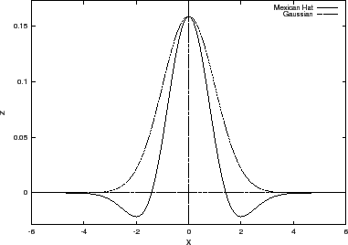
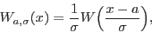
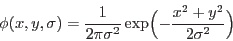
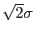
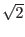
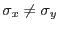
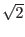
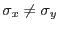

The ewavelet task detects sources using wavelet transforms. For this task and its description we have made use of the Chandra Detect User Guide by Dobrzycki et al. ([1]) and the articles by Damiani et al. ([2],[3]), but the implementation will be new.
|  |
Wavelet transformations are an extension of Fourier transformations,
but unlike the Fourier transformation functions (sines and cosines),
wavelet functions have a well defined location in space.
A wavelet function should have a zero normalization and satisfy the property:
|  | (1) |
|  | (2) |
The central part of the MH is positive and resembles a Gaussian function (see Fig. 1). Outside the circle with axis length  the MH is negative. Since the image is convolved with the MH function, the MH acts like a sort of sliding cell: the positive part being the source cell and the negative part being background area. From this it is clear that the wavelet scale should be smaller than the image itself in order to get a well defined image convolution. As a rule of thumb, the scale size should not exceed 1/8th of the image size.
Sources are detected by convolving the image with the MH function for
a given scale parameter  .
Local maxima in the convolved image correspond to sources.
The image is convolved using several scale parameters.
In this implementation, like in most implementations,
the scale size is increased for each
convolution with a factor .
Unlike the Chandra software we use circular symmetric wavelet functions.
The reason is that allowing
 increases the number of
convolutions, which would make the task considerably slower.
Moreover, it would only increase the sensitivity for elongations in two
very distinct directions, ignoring source position angles in between
0
.
Local maxima in the convolved image correspond to sources.
The image is convolved using several scale parameters.
In this implementation, like in most implementations,
the scale size is increased for each
convolution with a factor .
Unlike the Chandra software we use circular symmetric wavelet functions.
The reason is that allowing
 increases the number of
convolutions, which would make the task considerably slower.
Moreover, it would only increase the sensitivity for elongations in two
very distinct directions, ignoring source position angles in between
0 and 90
and 90 .
.
If we assume that the source shape has a Gaussian form we can analytically
derive the value of the maximum correlation at a given wavelet scale  .
So the source is described by:
.
So the source is described by: